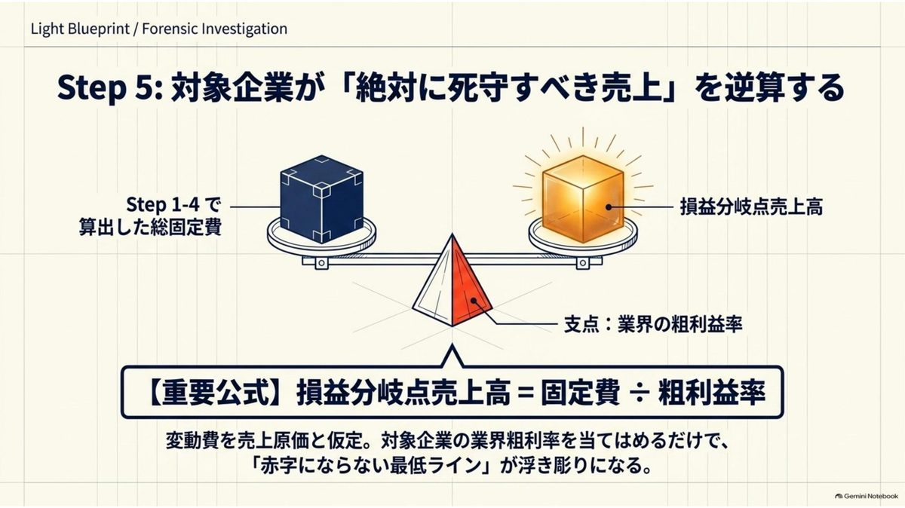
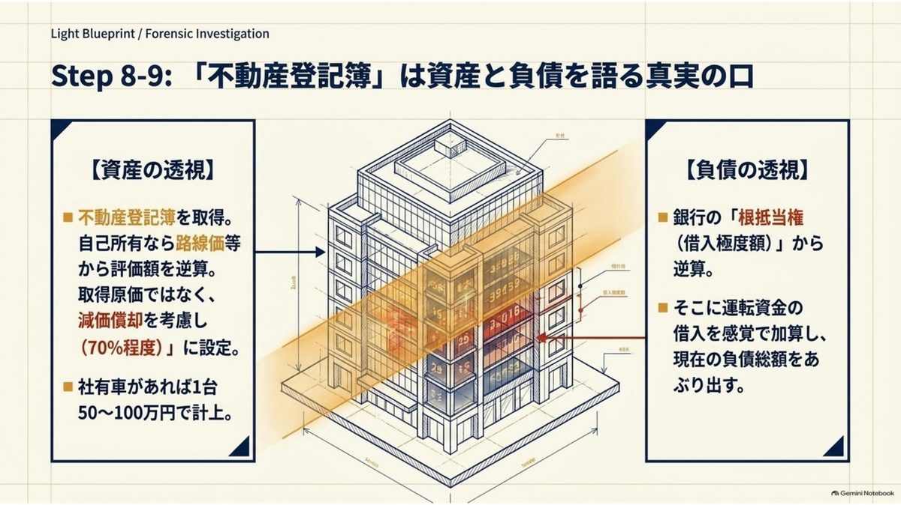
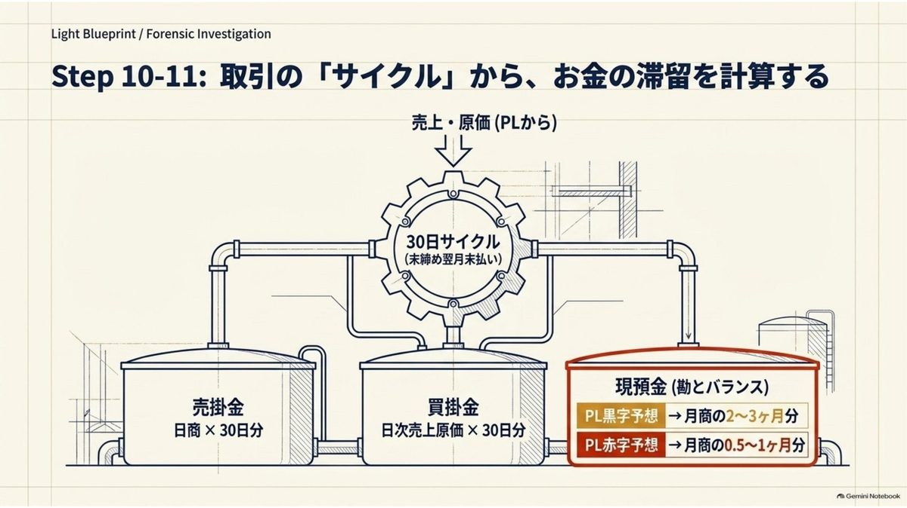
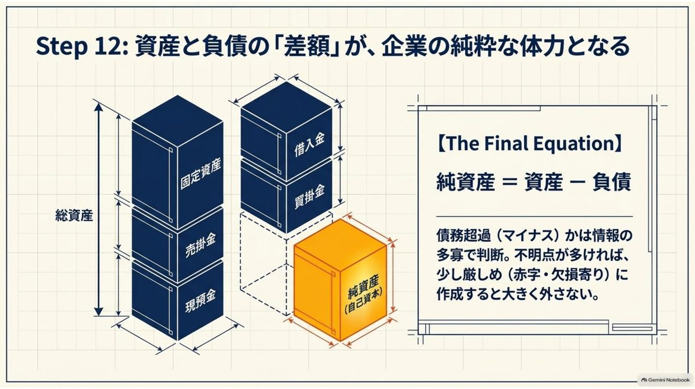

決算書が手に入らない会社を、外から推定する｜財務版フェルミ推定
取引先の決算書がもらえない。日本の会社の大半は非上場で、これがむしろ普通の状態です。 それでも判断はしなければならない。公開されている断片から決算書を組み立てる手順と、 その推定が外れる典型的な場面をまとめます。
決算公告は義務。ただし守られていない
取引先の決算書が欲しい。けれど出してもらえない。与信の実務で最も多い場面がこれです。
意外に思われるかもしれませんが、株式会社の決算公告は会社法上の義務です。会社法440条は、定時株主総会の終結後、遅滞なく貸借対照表を公告しなければならないと定めています。つまり本来なら、どの株式会社の決算書も見られるはずなのです。
実際には、そうなっていません。理由は単純で、公告を怠っても、罰則がほとんど適用されないからです。会社法976条は100万円以下の過料を定めていますが、公告を怠っただけで実際に科された例はほとんど確認できません。官報に載せているのは、対外的な信用を重く見る一部の会社に限られます。
経営者の立場からすれば、財布の中身を進んで見せたくないのは自然な感覚です。それを責めても仕方がない。「非開示が当たり前」という前提から始めるほうが実務的です。
実務メモ：信用調査の仕事をしていたとき、決算書を出してもらえない会社のほうが圧倒的に多数でした。それでも報告書は書かなければならない。だから「見えない会社をどう見るか」は、避けて通れない技術でした。決算書がある会社を分析するのは、実は簡単なほうです。
推定の骨格は「損益分岐点」ひとつ
推定と聞くと、勘や当てずっぽうを想像するかもしれません。違います。推定には計算の背骨が必要で、それが損益分岐点です。
考え方はこうです。会社の費用は、売上に比例して増える変動費と、売上と関係なくかかる固定費に分けられます。そして固定費は、外から見えるのです。
- 人件費 … 従業員数と求人票の給与額から計算できる
- 家賃 … 所在地と面積、周辺の賃料相場から計算できる
一方の変動費は、業界の粗利益率で近似できます。売上原価をほぼ変動費とみなすなら、こうなります。
| 求めるもの | 式 |
|---|---|
| 損益分岐点売上高 | 固定費 ÷ 粗利益率 |
| 変動費 | 売上高 ×（1 − 粗利益率） |
| 最終損益 | 売上高 − 固定費 − 変動費 |
この1本目の式が、推定全体を支えます。固定費が積み上がれば、その会社が赤字にならないための最低売上ラインが出る。あとは実際の売上がその線の上か下かを判断するだけになります。

この式の感覚をつかむには、損益分岐点シミュレーターで固定費と粗利率を動かしてみるのが早いと思います。固定費が1割増えると損益分岐点がいくら動くか、粗利率が5ポイント下がると何が起きるか。推定でいちばん効くのはこの体感です。
損益計算書を組み立てる
順番は、確実なものから曖昧なものへ。いちばん確からしい固定費から積み上げ、最後に売上を置くのが崩れにくい手順です。
従業員数を推定する
まず商業登記簿を取得します。そのうえで、会社ホームページの会社概要、ハローワークや求人サイトの募集要項を探します。店舗があるなら、その数と面積からも見当がつきます。
どれも見つからないときは、「5名以下」と置いて構いません。規模が大きくなれば、外から見える情報は自然に増えるからです。情報が出てこないこと自体が、規模の小ささを示しています。
人件費を推定する
求人票が見つかれば、募集給与が分かります。年収に換算して従業員数を掛ければ、固定費の大半を占める人件費が出ます。ここが推定全体の中で最も精度が高い部分です。会社が自分で公表している数字だからです。
家賃、その他の固定費
本店所在地と事業所の面積から、周辺の賃料相場を調べて年額換算します。自社保有と見られる場合は、路線価などから資産価値を逆算します（この数字は後で貸借対照表にそのまま使えます）。
残りの固定費は、正直なところ肌感覚です。判断がつかなければ、仮置きした推定年商の10%を足すだけでも実用的な精度になります。水道光熱費、通信費、保険料、リース料といった細かい費用は、この一括りで吸収できます。
売上高を置く
ここが最も難しい。商品や単価が分かるなら「客単価 × 日商 × 営業日数」で組めます。分からない場合は、先に計算した損益分岐点売上高より上か下か、その一点だけを判断します。
BtoCの会社であれば、「情報が出てこない ≒ 規模は大きくない ≒ 損益分岐点の近く」という見立てで、大きく外れません。ただしこの見立てには例外があり、それが後半の主題になります。
貸借対照表を組み立てる
損益計算書ができれば、貸借対照表はその延長で組めます。作れるのは取得原価ベースの決算書ではなく、いまの価値で見た「実態バランスシート」です。与信の判断材料としては、むしろこちらのほうが役に立ちます。
固定資産と借入金は、登記簿が語る
不動産を自社で持っているかどうかを調べます。持っていれば、路線価や周辺の取引相場から評価額を出し、経過年数ぶんを減価させて7割程度に置きます。
そして不動産登記簿は、資産だけでなく負債も教えてくれます。銀行の根抵当権が設定されていれば、その極度額と設定日が分かる。設定日から返済が進んだぶんを差し引けば、現在の借入残高の見当がつきます。ここに運転資金ぶんの借入を足せば、負債側の骨格ができます。
社用車があれば、1台あたり50〜100万円で車両運搬具に計上します。

売掛金と買掛金は、決済サイクルから出る
企業間取引の決済は「月末締め・翌月末払い」が標準です。回収まで30日と置けば、貸借対照表に載る売掛金は日商の30日分になります。買掛金も同じで、日次の売上原価の30日分。売上原価は「売上高 ×（1 − 粗利益率）」で出ているので、そのまま使えます。

現預金と純資産
現預金は正直、勘の領域です。資金繰りが安定している会社なら月商の2〜3か月分。赤字と見立てているなら0.5〜1か月分。この幅で置きます。
最後に、資産の合計から負債の合計を引いた差額を純資産とします。ここまで積み上げてきた推定の誤差が、全部この一点に集まることになります。だから純資産の推定値は、絶対額より符号のほうが重要です。
迷ったときは厳しめに置くのが実務です。与信判断で外して困るのは、危ない会社を安全と見誤ったときだけだからです。

推定が外れる3つのパターン
ここからが本題です。手順どおりに組んでも、外れるときは外れます。しかも外れ方には型があります。何百件と推定を作っていると、同じ場所で同じように外していることに気づきます。
そして重要なのは、3つとも「実際より悪く見積もってしまう」方向に外れるという点です。危ない会社を安全と誤るのではなく、健全な会社を危ないと誤る。与信の実務としては安全側の誤りですが、優良な取引先を逃す原因になります。
PATTERN 1
固定資産と有価証券を厚く持っている会社
推定の骨格は損益計算書です。損益分岐点から売上を置き、そこから貸借対照表に展開する。つまり「稼ぐ力」を軸に会社を見ています。
ところが、長く続いている会社ほど、稼ぐ力とは別の財産を持っています。何十年も前に取得して簿価が下がりきった土地、代々持ち続けている取引先の株式、生命保険の積立金。これらは損益計算書にほとんど出てきません。
結果として、損益からは「ぎりぎりの会社」に見えるのに、実際には売れば数億円になる資産を抱えている。推定純資産と実際の純資産が、桁で違うことがあります。創業が古い会社、地場の同族会社では、この外し方を疑ったほうがいい。
PATTERN 2
建設業・工事業で、大口とのつながりが強い会社
この業種は、外から見える情報が極端に少ない。一般消費者向けの広告を打つ必要がなく、ホームページも会社概要だけということが珍しくありません。求人も、出していても少人数です。
手順どおりなら「情報が少ない＝規模が小さい＝損益分岐点の近く」と置くところです。ところが、この見立てが最も外れるのがここです。
元請けや官公庁との関係が固まっている会社は、営業活動をほとんどしません。だから外に情報が出ない。そして工事の前受金が先に入る商流のため、手元の現金は驚くほど厚いことが多い。推定では月商1か月分の現預金を置いたのに、実際には半年分あった、ということが起こります。
PATTERN 3
既存の取引先だけで回っている会社
2番目と近い構造ですが、業種を問いません。新規開拓をしていない会社は、そもそも外部に情報を出す動機がありません。
求人を出さないのは、人が辞めないから。ホームページを更新しないのは、それで困らないから。情報の少なさは、経営の不振ではなく、安定の裏返しであることがあります。
この場合、推定は手がかりを失って空振りします。売上は損益分岐点付近に置かざるを得ず、現預金も薄く置くことになる。実態はその何倍もある、ということが起こります。
外れ方にも意味がある
3つのパターンには、共通した構造があります。この推定手法は「外に向かって情報を発信している会社」を前提にしているということです。
広告を打ち、求人を出し、店舗を構える会社は、その活動そのものが手がかりになる。逆に、発信しなくても事業が回る会社は、この網に引っかかりません。
| 情報量 | 素直な解釈 | 疑うべき例外 |
|---|---|---|
| 多い | 規模が大きい／成長中 | 集客に費用がかかる業態 |
| 少ない（BtoC） | 規模は小さい | おおむね素直に解釈してよい |
| 少ない（BtoB・建設） | — | 固定客で完結。むしろ堅い可能性 |
| 少ない（創業が古い） | — | 含み資産を持っている可能性 |
だから推定を作ったあとに、確認すべきことが決まります。「この会社は、情報を出す必要がある業態か」という問いです。答えが「いいえ」なら、推定値は下振れしていると考えたほうがいい。
そして、その場合に効くのが不動産登記簿です。情報を出さない会社でも、不動産の所有と担保設定だけは登記に残ります。推定が空振りしやすい会社ほど、登記簿の重みが増すという関係になっています。
実務メモ：推定を何百件と作ってわかったのは、当てにいくと外れるということでした。金額をぴたりと当てようとすると、根拠の薄い数字を積み上げることになる。むしろ「損益分岐点の上か下か」「債務超過かそうでないか」という粗い判断のほうが、はるかに高い確率で当たります。精度を上げるべきなのは金額ではなく、結論の粒度のほうです。
どこまで当てにしてよいか
最後に、この手法の限界をはっきりさせておきます。
推定決算書は、決算書の代わりにはなりません。与信限度額をこの数字で決めるのは無理があります。使いどころは、そこではありません。
| 使える | 使えない |
|---|---|
| 取引を始める前の、規模感の把握 | 与信限度額の算定 |
| 相手が語る事業規模との整合確認 | 債務超過かどうかの断定 |
| 決算書を出してもらう交渉の準備 | 社内稟議の根拠資料 |
| 取引条件をどこまで緩められるかの検討 | 取引停止の判断 |
いちばん実用的なのは、3つ目です。推定を持って面談に行くと、質問の質が変わります。「御社の年商はどれくらいですか」ではなく「3億前後と見ているのですが、近いですか」と聞ける。前者は答えをはぐらかせますが、後者は否定か肯定しか返せません。
そして相手が数字を訂正してくれたら、それは決算書の一部を口頭で開示してもらったのと同じです。推定の本当の価値は、当てることより、相手に語らせることにあります。
もし決算書が手に入ったなら、推定はそこで役目を終えます。あとは実際の数字を読む作業に移ってください。
try the tool
財務でポン！
決算書が手に入ったら、PDFを置くだけで3期分を読み取り、業歴・資本構成・規模・損益・経営者・償還余力の6軸100点満点で判定します。判定結果を画面で確かめるところまでは料金がかかりません。読み取りも計算もブラウザの中だけで行い、決算書ファイルは送信されません。
決算書を置いてみる →まとめ
- 決算公告は会社法440条の義務だが、罰則がほぼ適用されないため非開示が常態になっている。
- 推定の骨格は損益分岐点売上高＝固定費÷粗利益率。固定費は外から見え、変動費は業界粗利率で近似できる。
- 手順は確実なものから曖昧なものへ。従業員数→人件費→家賃→その他固定費→売上、の順に置く。
- 貸借対照表は、不動産登記簿（資産と根抵当権）と決済サイクル（売掛金・買掛金）から組む。
- 外れるのは含み資産を持つ古い会社、大口と固定的につながる建設・工事業、既存客だけで回る会社の3つ。いずれも実態より悪く見積もる方向に外れる。
- 金額を当てにいかず、結論の粒度を粗くするほうが当たる。
参照した資料
- 決算公告の義務および過料について、会社法第440条・第976条（参照日：2026年8月28日）
- 業種別の粗利益率・財務指標の水準を確認する際は、財務省「法人企業統計調査」（参照日：2026年8月28日）
- 路線価は、国税庁「財産評価基準書 路線価図・評価倍率表」（参照日：2026年8月28日）
- 登記事項証明書の取得方法は、法務省「登記・供託オンライン申請システム」（参照日：2026年8月28日）
- 推定の手順そのものは、公表資料の解説ではなく、企業信用調査の実務で用いていた方法を整理したものです。
本記事で説明する推定は、公開情報から企業の財務内容を概算するための手法であり、算出された数値は実際の決算内容と一致しません。特定の取引や与信の可否を推奨するものでもありません。与信限度額の設定や取引の可否は、決算書・信用調査報告書・保全状況等を踏まえ、貴社の基準に沿ってご判断ください。

エリエール
財務経理、金融機関での法人営業・制度対応、企業信用調査を経て独立。会社の数字を作る側、貸す側、調べる側の三方向から決算書を見てきました。